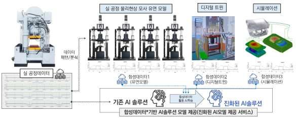

[Completed] 디지털트윈 시범모델 가시화 및 합성데이터 수집 용역
연구책임자 / 2024.12.19 ~ 2025.04.30 / 한국생산기술연구원 (KRW 90 million)
디지털트윈 시범모델 가시화 및 합성데이터 수집 용역 (Visualization of Digital Twin Pilot Model and Synthetic Data Collection Services)
기간: 2024.12. ~ 2025.06.
Funding: KITECH (KRW 90 million)
전기·전자 및 반도체 산업의 소부장 기업을 대상으로, 생산 공정의 효율성과 품질을 향상시키기 위한 기술 개발이 진행 중입니다. 본 프로젝트는 디지털 트윈 기술과 인공지능 기반 합성데이터를 활용하여 생산성을 높이고 디지털 전환(DX)을 지원하는 것을 목표로 합니다. 디지털 트윈 기술을 통해 생산설비 데이터 수집, 장비 간 연계 분석, 불량 데이터 관리 등 주요 공정 문제를 해결하고, 2D 및 3D 모델을 활용해 공정과 설비를 시각화합니다. 또한, 실시간 데이터 연동과 대시보드를 통해 공정을 최적화합니다. 아울러, 공정 모사 실험, 시뮬레이션 등을 통해 정상 및 이상 상태의 데이터를 생성하고, 라벨링과 검증을 거친 합성데이터를 제공하여 기업이 공정을 분석하고 이상 상황을 예측할 수 있도록 지원합니다. 결과적으로, 디지털 트윈과 인공지능 기술을 결합하여 소부장 기업의 생산성과 품질을 혁신하고, 전기·전자 및 반도체 산업의 경쟁력을 강화하는 것을 목표로 합니다.
English Summary:
This project aims to enhance the efficiency and quality of production processes for SMEs in the electrical, electronics, and semiconductor industries by leveraging Digital Twin technology and AI-based synthetic data. It addresses critical challenges such as data collection, interconnectivity analysis, and defect management while optimizing workflows with real-time data and visualization through 2D/3D models. By generating validated synthetic data through process simulations, the project enables effective process analysis and anomaly prediction. Integrating Digital Twin and AI technologies, it seeks to boost productivity, improve quality, and enhance the competitiveness of these industries.
